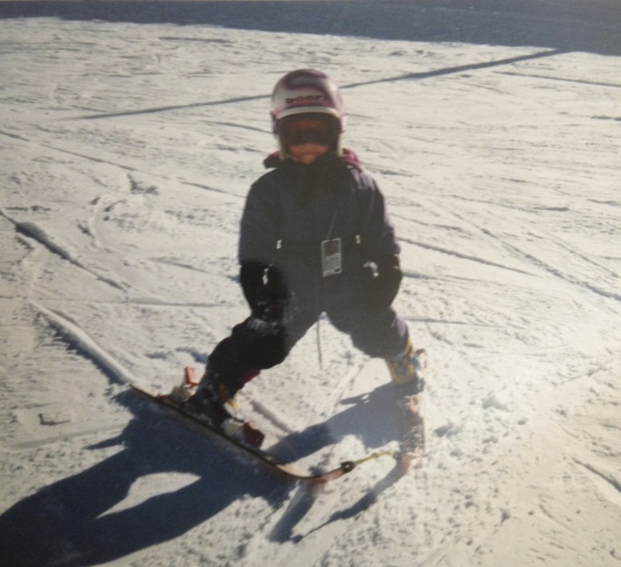
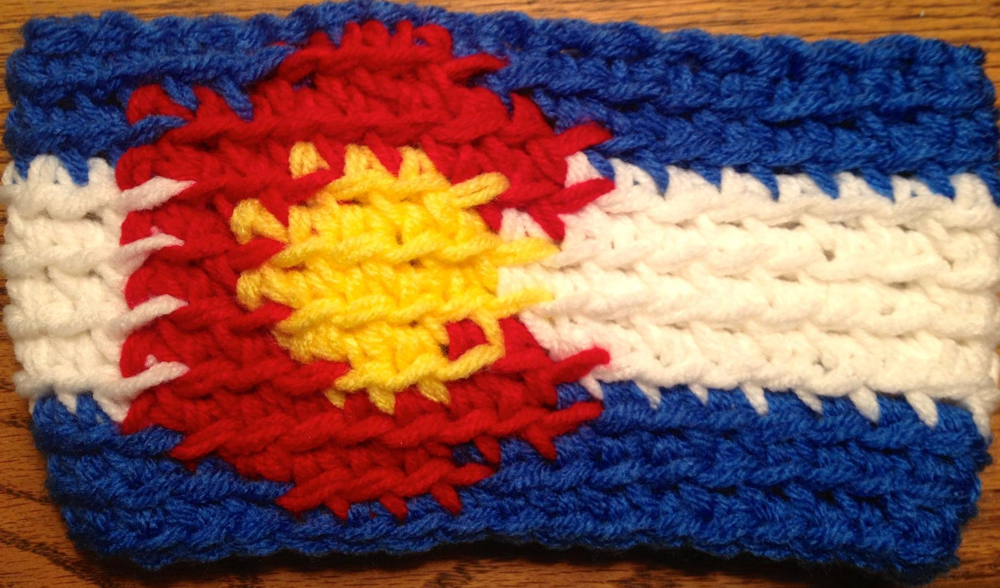

I was born in the mountains of Colorado and grew up with a love for sliding down the mountains and getting lost in the wilderness. Her parents instilled this love in her DNA, having a skipass when I was six months old, they trusted their limited skiing abilities and brought myself on the mountain.

After an accident, I went gallivanting off in Spain, no point in being in a town where you can't do the only thing there is to do. Then I did all the adult steps and went to college and started working for startups. Throughout the rest of my time at the University of Denver, I gave all her free time to startups either through free or paid internships. Through working with 1 Million Cups, I cultivated my experience and love for the world and developed relationships with some amazing mentors.
After graduating from the University of Denver, I started a company dedicated to helping students and young professionals get involved with entrepreneurship. Through two different segments, Consulting and Intern Connect, we work to solve startups pain points while giving young people the experience they want and need. This company has given her the opportunity to learn and grow through each new client. Whether it be learning about a new industry (what is happening with drone regulations?) or tackling a new skill (yes, I will learn how to format these pictures on WordPress...Google here I come) or simply by being inspired by people's stories - the world of entrepreneurship is the one for me!
Cause it is time for me to LEVEL UP and I can't think of something that excites me more than this.
|
Not only have I loved the developers that I have worked with (if you can’t tell by now, I'm all about the people I surround myself with) but they all love what they do. How many areas of life can you find almost every single person love what they do? Yeah, it's challenging at times, that’s called a job, but they are genuinely happy with the challenge and makeup of their work.
| I've always been someone who loves to create, but I'm not as talented as I wish I was. There are no amazing drawings or paintings coming out of my hands (if anything, it’s horrible knockoffs of stuff I find on Pinterest) but I do have the ability to create with my eyes and processes. I started my first company in high school, SarahEvelynn Crochet, where I would use numbers and patterns to make hats, scarves, mittens, etc. |
 |
Since then, my love for photography has grown. I have an eye for what looks good, how to frame situations and what can make an image go from good to great. I know that my eye, analytical mind and quest for knowledge will set me up for the best possible chance of success. Most of this website I made with help from Google, so with a teacher and in an actual classroom setting, I have confidence I can succeed.